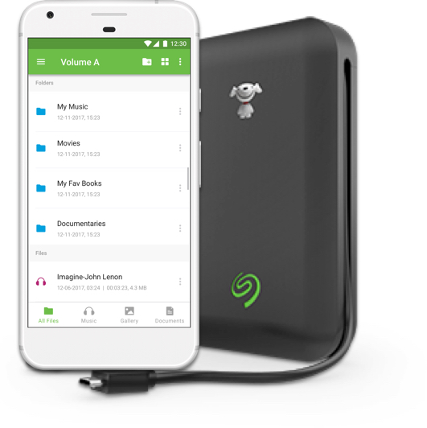

Seagate Mobile Toolkit
This is an application for iOS and Android that allows you to browse and manage the files on your Seagate hard drive using your phone or tablet.
I led the design efforts and worked with design, engineering and quality assuarance teams to develop the application.

IRCTC - Rail Connect
Indian Railway Catering and Tourism Corporation handles online booking of train tickets, catering and tourism services for the Indian Railways.
I conducted an expert review to evaluate the usability of existing android app and provide enhanced user experience for hassle free ticket booking.
NutriBullet
The Nutribullet Balance app syncs with the NutriBullet Blender via bluetooth and tracks nutritional information based on the ingredients you add while making a smoothie.
I worked with designers and product owners from the NutriBullet team to design the experience of this app.

Samsung India - Case Study
The Nutribullet Balance app syncs with the NutriBullet Blender via bluetooth and tracks nutritional information based on the ingredients you add while making a smoothie.
I worked with designers and product owners from the NutriBullet team to design the experience of this app.
Youth For Seva
Youth for Seva is a nation wide volunteering organisation that aims to support schools, destitute shelters, hospitals and other organizations in the social sector to.
I work with YFS mainly in the education vertical, working closely with middle school and high school students. I aim to provide them a strong academic foundation using which they can achieve their career goals.